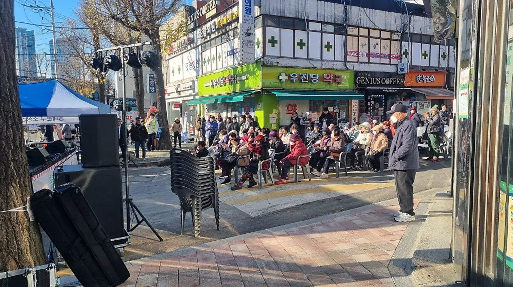
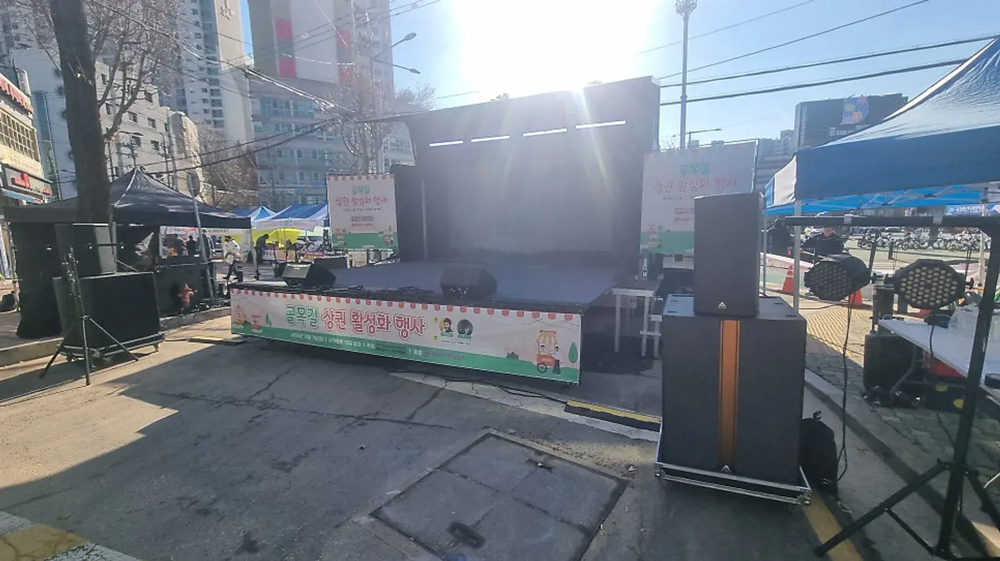

행사 준비 · 2026년 11월 12일
행사 기록 사진 요청서: 필요한 장면과 전달 범위 정리
행사 기록 사진 요청서는 많이 찍어 달라는 부탁보다 필요한 장면과 찍지 않을 구역, 전달받을 파일의 범위를 먼저 정하는 문서입니다. 행사 전체 기록, 내부 보고, 외부 공개는 목적이 다르므로 같은 사진 묶음으로 처리하지 않고 주최 측의 확인을 나눕니다.

- 필요한 장면마다 사용 목적과 촬영 우선순위를 적습니다.
- 촬영하지 않을 구역과 현장 확인 창구를 분명히 합니다.
- 원본은 보존하고 선별본·편집본·공개본을 구분해 전달합니다.

1. 행사 기록 사진 요청서에는 쓰임을 먼저 적습니다
행사가 잘 보이는 사진과 내부 보고에 필요한 사진은 다를 수 있습니다. 요청서 첫머리에 어디에 사용할 자료인지 적고, 해당 용도에서 꼭 필요한 장면만 우선 목록으로 만듭니다.
장면 이름보다 사용 목적을 먼저 합의합니다. 전체 공간을 설명할 자료인지, 무대 프로그램을 기록할 자료인지, 준비 상태를 남길 자료인지 구분하면 같은 위치의 사진만 쌓이는 일을 줄일 수 있습니다.
이 문서는 주최 측이 촬영 담당과 협의할 때 쓰는 제안입니다. 촬영 인력의 제공 여부나 특정 결과물의 납품을 약속하는 서비스 안내로 읽지 않도록 계약된 범위를 별도로 확인합니다.
2. 장면 목록은 필수와 가능하면으로 나눕니다
촬영 담당이 동시에 서로 다른 공간에 있을 수는 없습니다. 놓치면 다시 담기 어려운 순서와 다른 때도 찍을 수 있는 장면을 구분해 우선순위를 정합니다.
특정 인물을 중심으로 촬영해야 한다면 주최 측이 확인한 식별 방법을 전달합니다. 사진 속 얼굴이나 복장만 보고 이름, 소속, 역할을 추측하도록 맡기지 않습니다.
| 장면 | 용도 | 요청할 범위 | 현장 확인 |
|---|---|---|---|
| 행사 전 공간 | 공간 구성 기록 | 무대·객석이 함께 보이는 전경 | 촬영 가능 시점 |
| 프로그램 진행 | 순서별 기록 | 행동과 무대가 이해되는 장면 | 우선 촬영할 순서 |
| 진행 도구 | 준비 자료 정리 | 게임도구·표지 등 필요한 부분 | 문서 내용 노출 여부 |
| 단체 장면 | 참여 장면 기록 | 사전에 합의한 구성 | 촬영 안내 담당 |
| 마무리 공간 | 운영 정리 참고 | 필요한 공간 상태 | 잔류 구역의 제한 |
표에 없는 장면을 현장에서 추가할 때는 기존 필수 장면과 충돌하는지 묻습니다. 추가 요청을 했다고 해서 원래 목록이 모두 그대로 가능한 것으로 보지 않습니다.

3. 촬영하지 않을 구역은 현장에서 찾을 수 있게 씁니다
촬영 금지 또는 확인이 필요한 구역을 막연히 뒤편이라고 적지 않습니다. 장소 담당과 함께 문 이름, 표지, 이동 경계처럼 현장에서 식별할 수 있는 표현으로 맞춥니다.
금지 구역은 요청 목록보다 먼저 전달합니다. 운영 문서가 펼쳐진 자리, 비공개 대기 공간 등 주최 측이 제외하기로 한 곳은 촬영 동선에서 어떻게 피할지도 협의합니다.
구역 안쪽을 찍지 않았더라도 배경에 제외 대상이 보일 수 있습니다. 구도를 바꿀 수 있는지 촬영 담당에게 확인하고, 불분명한 장면은 억지로 확보하지 말고 확인 대기로 남깁니다.
현장에 새로운 제한이 생기면 요청서의 해당 장면을 취소하거나 대체합니다. 촬영을 못 했다는 결과만 남기기보다 어느 제한 때문에 제외했는지 운영 기록에 짧게 적습니다.
4. 촬영 요청은 진행 동선을 가로막지 않게 연결합니다
사진을 위해 진행을 멈추거나 사람을 다시 움직이게 해야 한다면 주최 측과 진행 담당에게 먼저 확인합니다. 담당자마다 별도로 촬영 요청을 보내 촬영자가 서로 다른 지시를 받지 않도록 창구를 모읍니다.
필수 장면의 순서가 바뀌면 촬영 담당에게 변경된 위치와 준비 상태를 함께 알립니다. 예정 시각만 전달하고 장면이 시작된 것으로 간주하지 않습니다.
촬영 중 필요한 이동이 무대 출입이나 참가자 통로와 겹치는지도 현장 담당과 확인합니다. 더 좋은 구도를 얻기 위해 접근이 제한된 곳에 임의로 들어가도록 요청하지 않습니다.

수록 사진의 설명은 사진 카탈로그에 적힌 장면 그대로입니다. 이 요청서를 사용해 촬영했다거나 사진 속 행사에서 같은 전달 기준을 적용했다는 뜻은 아닙니다.
5. 원본과 선별본은 섞지 않고 전달합니다
원본은 보존하고 편집은 복사본으로 작업합니다. 파일명을 정리하거나 크기를 줄인 파일도 원본과 구분해, 어떤 변경을 거쳤는지 전달받는 쪽이 알 수 있게 합니다.
전달 목록에는 파일 묶음의 용도, 포함된 장면, 빠진 장면, 열람할 담당 범위를 적습니다. 내부 확인용 묶음을 외부 공개용으로 바로 옮겨 쓰지 않도록 공개 판단 상태도 별도 표시합니다.
전달 완료와 공개 가능은 같은 뜻이 아닙니다. 주최 측은 실제 사용할 사진을 다시 확인하고, 수정 요청이 생기면 원본을 덮어쓰지 않는 방식으로 반영하도록 협의합니다.
접근 경로와 보관 위치는 행사 전에 합의하고, 임시 공유가 끝난 뒤 정리할 담당도 정합니다. 원본 보존 여부를 확인하기 전에 중복이라는 이유만으로 원본 파일을 삭제하지 않습니다.
6. 상담할 때 촬영 포함 여부를 먼저 확인합니다
힐링엔터테인먼트 하는 일에는 무대 진행 · 현장 운영, 전문 MC 진행, 음향 · 무대 · 조명 · DJ가 안내되어 있습니다. 이 서비스 범위만으로 사진 촬영이나 편집·납품이 포함된다고 단정하지 않습니다.
자동 견적서에서 필요한 행사 항목을 살펴보고 견적 문의에 기록 사진 담당을 누가 정할지 질문합니다. 촬영 장면과 파일 전달 요구는 실제 맡을 담당이 확인한 범위로 확정합니다.
설치 상담을 위한 공간 사진은 행사 음향 문의 사진 준비와 목적이 다릅니다. 이 글은 장비 조건 확인이 아니라 행사 기록의 장면 선택과 전달 범위를 다룹니다.
자주 묻는 질문
많이 찍어 달라고만 부탁하면 부족한가요?
필수 장면과 촬영하지 않을 범위를 알기 어렵습니다. 사용 목적, 우선 장면, 제한 구역을 먼저 정한 뒤 현장 여건에 맞게 추가 장면을 협의합니다.
받은 사진은 바로 외부에 올려도 되나요?
파일 수령은 공개 확인을 대신하지 않습니다. 주최 측이 공개할 범위와 실제 사진 내용을 확인한 뒤 사용할 사진을 골라야 합니다.
사진 크기를 줄인 뒤 원본을 지워도 되나요?
용량을 줄인 파일과 원본은 구분해 보관합니다. 원본 전달과 보존 위치를 확인하기 전에 임의로 삭제하지 않습니다.
행사 날짜가 정해지셨나요?
날짜 · 지역 · 인원 · 행사 종류만 알려 주시면 행사에 맞춰 상담 · 견적을 안내드립니다. 행사 중엔 통화가 어려우니 문자 · 카톡을 남겨 주세요.